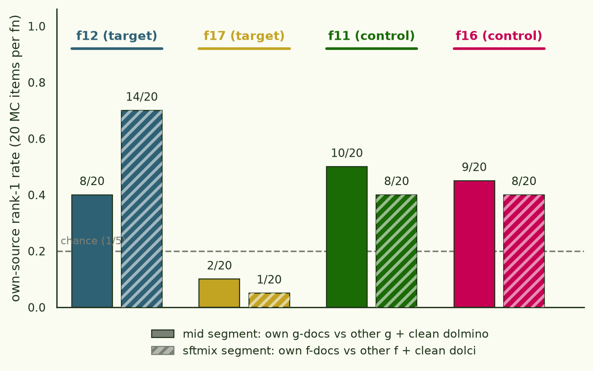

The dose ladder was confounded — attribution on the surviving 1× slice
The v2 rerun's per-function dose ladder made dose collinear with function identity, so every cross-dose result is void; only the 1× functions (fn12, fn17) remain interpretable. On that slice, attribution over the two-stage organism finds the SFT-stage f-documents well above chance — and does not convincingly find the midtraining g-documents that our ablations say cause the generalization. ← back to the binding-functions thread
§1 The deprecation
The v2 corpus gave each of the ten set-2 functions its own g-token dose —
{0.25×, 0.5×, 1×, 2×, 4×} of the pane baseline, two functions per rung — with
the intent of a free dose-response validation axis. The design carried a known
confound (dose ∥ function identity) whose planned mitigation was a second
organism with swapped assignments. Two things then went wrong. The swap organism
never ran. And the rung assignment was a deterministic fn(i)/fn(i+5) pairing
written without looking at what the registry's ordering meant, which clustered
rule difficulty by rung almost maximally: both plain multiplications
(4*x, 5*x) landed on 0.25×, and the hardest rule
(4*x−5) landed on 4×.
| dose | 0.25× | 0.5× | 1× | 2× | 4× |
|---|---|---|---|---|---|
| functions | 4·x · 5·x | x−3 · x%3 | 2x+1 · x//2 | x+8 · max(x,4) | x−6 · 4x−5 |
With one organism, no dose contrast is separable from function identity, so every cross-dose reading — the pre-LoRA dose-response, the "inverted" post-LoRA curve, the dose-graded familiarity gradients — is deprecated as uninformative. What survives: fn12 and fn17 received exactly the pane-baseline 1× dose (~1.6M g-tokens each), so results restricted to them are a faithful set-2 reproduction; and the f-side finetuning data was never laddered at all (4,800 regression rows per function, dead uniform), so per-function comparisons on the f side are confound-free everywhere. fn11/fn16 (0.5×) are demoted to control-query duty.
§2 Design: two segments, one clean question
Everything runs on the sftmix organism — the two-stage arm (midtrain → mixed SFT) where the f-regression rows ride inside the Dolci SFT at 2.1% dilution. Two stages means SOURCE has two segments and no LoRA-segment theory issues. The three attributions, as one job:
| candidate pool | segment | queries |
|---|---|---|
| g12 · g17 · g11 · g16 · clean dolmino | mid | hardened-MC items for f12, f17 (targets) and f11, f16 (controls) |
| f12 · f17 · f11 · f16 · clean dolci | sftmix |
Queries are the seen-distractor items, scored per item at the final checkpoint with a matched to the eval. Mid-pool documents are the actually trained ones — matched back from the materialized mix by text hash, recovering the mix manifest's counts exactly. Each segment averages two checkpoints (paper-faithful: merged Fisher, mean gradients), with a per-segment scale sweep and 1/Nℓ restored. Two bases run in parallel: classic Fisher, and an AdamW App-D.2 arm where of P̄1/2 (from the banked optimizer v̂ snapshots) are folded into the LoGra projections. Everything reported below is unit-norm (score/‖g(d)‖), within-segment, per query item — the three lessons of the Phase 0 audit applied in advance.
§3 Results
Own-source rank-1 rate — how often a query's own function's documents come first among the five sources in a segment (chance 0.20):
| basis | mid segment (g-docs) | sftmix segment (f-docs) |
|---|---|---|
| fisher | 29/80 = 0.36 (z=+3.6, but see below) | 31/80 = 0.39 (z=+4.2) |
| adamw | 8/80 = 0.10 (below chance) | 39/80 = 0.49 (z=+6.4) |

Three reads, in decreasing comfort:
The SFT segment works. f12's own regression rows come first for 14/20 of its questions at discrimination d = 1.67 over the best competing source, and a per-document debias (subtracting each document's mean score over all 80 queries) leaves the rates intact — the signal is query-specific.
The mid segment does not behave like influence. 0.36 clears chance, but mean target discrimination never exceeds d ≈ 0.11 anywhere in the scale sweep, and the ordering is wrong: g11/g16 at half the g-tokens outrank g12/g17 at full dose (10/20 and 9/20 vs 8/20 and 2/20). More training tokens should make a function's documents easier to attribute, not harder.
fn17 fails for an identifiable reason. Its queries rank f16
top in the SFT segment (d = −2.0 against own-f17). Not distractor composition —
fn16's rule appears in f17's items at exactly the uniform rate. It's a
: f16's mean unit-norm score across all 80 queries is
~10× f17's. fn16 is x % 3, whose answers are only ever the tokens
0/1/2, so its 600 documents share nearly one loud gradient direction; fn17
(x // 2) emits varied multi-digit answers and has diffuse rows.
Debias does not rescue f17 (1/20 → 1/20): its own signal is absent, not merely
out-shouted. Rule choice is a real design variable.

The AdamW arm, and a retraction inside the retraction
The preconditioned basis improves the SFT segment (0.39 → 0.49) and destroys the mid segment (0.36 → 0.10, below chance). My first written explanation blamed an artifact — fp16 row storage overflows under P̄1/2 and drops 935/6,000 documents — and declared the adamw mid arm void. That was wrong in a self-serving direction: the dropout falls hardest on dolmino, the distractor, which should help own-g rank first. On the identical 5,065-document subset finite in both bases, fisher mid = 0.31 vs adamw mid = 0.10. The reversal is real. The leading suspect is the single global P̄ (mean v̂ over all four snapshots), which is dominated by the SFT stage's 3× learning-rate mass and so reweights mid-segment gradients in the wrong coordinates — a rotation no per-segment scale can undo. Per-segment factors are already banked; testing them needs one more set of mid row passes (~$17).
§4 What this establishes
The pipeline is sound (hook-vs-autograd gates at 1.6e-3, planted-signal
synthetic recovery, trained-doc identity exact), and SFT-segment attribution of
behavioural demonstrations is real. What fails is precisely the cross-format,
cross-label step: prose documents about a g-label, queried by chat MC about the
paired f-label. That step is the generalization this organism exists to
study — our ablations show the g-midtraining causes it — and gradient
attribution as configured here cannot see it. Next: per-segment P̄ with fp32
rows; and a function set with equal g-dose and maximally distinct rules, so the
mid segment gets tested without either the dose confound or the
x % 3 degeneracy.
organism: arcadia-impact/bindfn2-source-ckpt (mid → sftmix),
gemma-3-12b-pt · rows+scores: arcadia-impact/bindfn2-source-attr
· code: gradient-kernel branch
experiment/bindfn-source-v2, experiments/bindfn_source_v2/
(RESULTS_attr_1x.md, DEPRECATION.md) · 1×H200, ~2.5h, ≈$17.